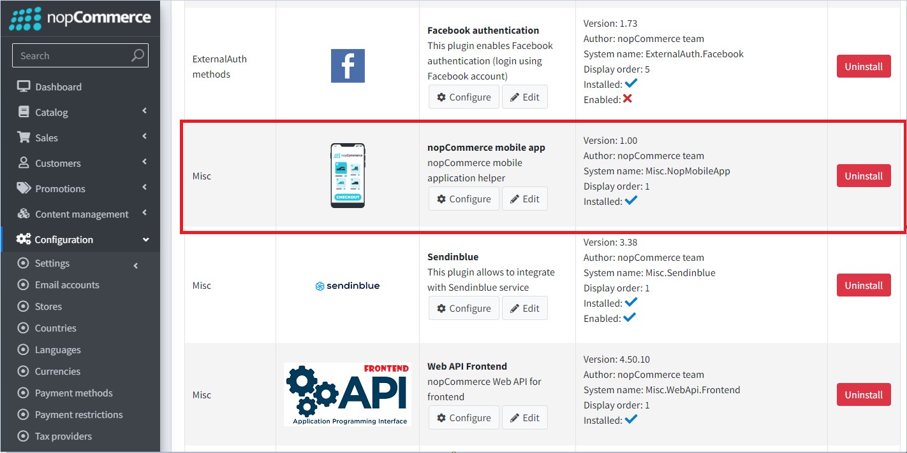
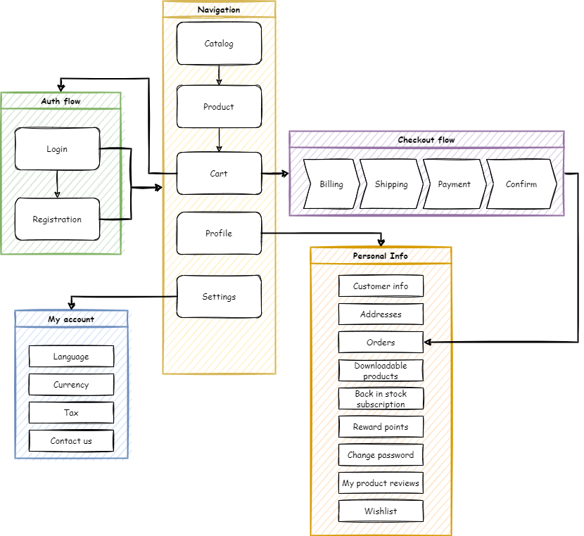
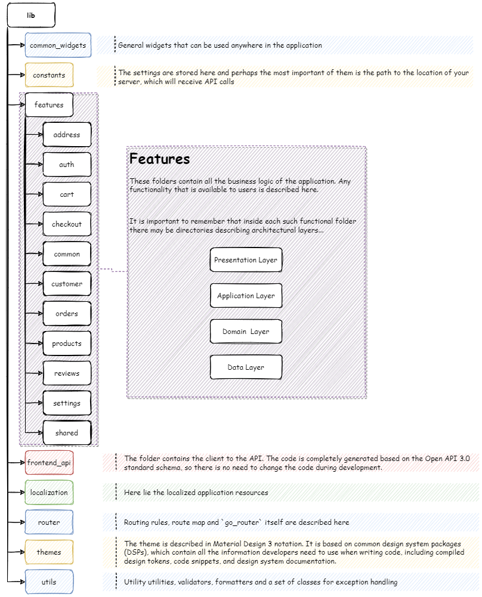
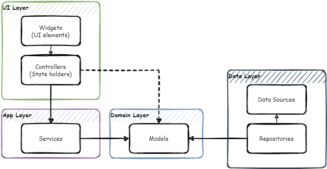

Mobile app documentation
Introduction
nopCommerce team provides a mobile application for iOS and Android. It will bring enormous value to your business. The mobile app is completely ready-to-go, so you can start selling your products and services straight away. Like the nopCommerce platform, the mobile app comes with the source code and offers unlimited customization options. What’s more, it can seamlessly adapt to your online store design and functionality. No coding or designing skills are required to integrate the app with your nopCommerce store, configure its content and features, publish it on the Google Play Store and App Store, and manage its workflow.
Here are some other significant features that will ensure efficient mobile eCommerce launching, customization, and maintenance:
Build with latest version of Flutter and Dart
Compatible with Android and iOS
Used Riverpod (state management) features
Easy to use UI and beautiful Material design 3
Token-Based Authentication
Internationalization support
Dark and Light theme support
Free icons
Setup
With the "nopCommerce mobile app" plugin, in addition to the "Web API Frontend" plugin, it is possible to manage some application settings.

The following functions are available:
- It is possible to transfer certain settings to the mobile application. This is done on purpose so as not to give access to absolutely all application settings. If you need additional settings, you must ensure that they are supported in the mobile application.
- Slider control on the main screen. You can also specify which products users will go to if they click on each slider image.
Visual Studio Code
The recommended development environment for Flutter is Android Studio. A convenient alternative is the VS Studio Code editor, below are the basic settings that help you comfortably work with the code, as well as a set of extensions necessary for development and debugging.
Editor settings
{
"[dart]": {
"editor.codeActionsOnSave": {
"source.fixAll": true
},
"editor.selectionHighlight": false,
"editor.suggest.snippetsPreventQuickSuggestions": false,
"editor.suggestSelection": "first",
"editor.tabCompletion": "onlySnippets",
"editor.wordBasedSuggestions": false,
},
"dart.warnWhenEditingFilesOutsideWorkspace": false,
"dart.renameFilesWithClasses": "prompt",
"editor.bracketPairColorization.enabled": true,
"editor.inlineSuggest.enabled": true,
"editor.formatOnSave": true,
"explorer.compactFolders": false,
"dart.debugExternalPackageLibraries": false,
"dart.debugSdkLibraries": false,
"editor.minimap.enabled": false
}
Extensions
For development, you will need to install the following extensions:
Name: Flutter
Id: Dart-Code.flutter
Description: Flutter support and debugger for Visual Studio Code.
Publisher: Dart Code
VS Marketplace Link: https://marketplace.visualstudio.com/items?itemName=Dart-Code.flutter
Name: Dart
Id: Dart-Code.dart-code
Description: Dart language support and debugger for Visual Studio Code.
Publisher: Dart Code
VS Marketplace Link: https://marketplace.visualstudio.com/items?itemName=Dart-Code.dart-code
Name: Adobe XD
Id: adobe.xd
Description: The new Adobe XD Extension for Visual Studio Code allows developers to visually map design sources, created in XD and available in Creative Cloud Libraries, to platform-specific code using design tokens. DesignOps teams will be able to create shareable Design System Packages (DSPs) that contain all the information developers need to consume while coding, including code snippets and documentation.
Publisher: Adobe
VS Marketplace Link: https://marketplace.visualstudio.com/items?itemName=Adobe.xd
Start development and customization
Open the source code from the archive that you will receive after purchasing the application in the Visual Studio Code editor.
Immediately after opening the project in the code editor, you will be prompted to download the included libraries. You can also do it yourself by running the following command in the terminal:
flutter pub get
Now you need to specify an endpoint to connect to the server to access the API. This setting is in the lib\constants\app_constants.dart file:
class AppConstants {
static const String storeUrl = 'https://yourstore.com';
}
Now everything is ready to run the application:
flutter run
Project structure
A mobile application developed on Flutter carries the functions of interacting with a public store using the Web API (Frontend). All the main processes of user interaction with the application are presented in the diagram below:

The approach that focuses on the fact that the functions of the application are root folders will be applied. And inside this folder, we describe the architectural layers inherent in this particular function in the form of subfolders. Thus, everything related to the functionality of interest to us is located in one folder, which greatly simplifies the understanding of the code.

Technology stack
Frameworks & Libraries used:
- Flutter SDK 3.3.9
- Dart SDK 2.18.5
- flutter_riverpod: 2.1.1
- go_router: 5.2.3
- flutter_secure_storage: 7.0.0
- dio: 4.0.6
App architecture
The application architecture is built according to generally accepted standards, described in the Android documentation. Since the project uses the Riverpod state management system, the architecture has been extended and looks like this:

Navigation - go_router
For navigation in the application, the go_router library is used. It is a declarative routing system built on top of the Flutter Router API.
The navigation map in the app looks like this:
Full paths for routes:
splash => /splash
home => /home
catalog => /catalog
category => /catalog/category/:id
manufacturer => /catalog/manufacturer/:id
vendor => /catalog/vendor/:id
productsbytag => /catalog/productsByTag/:id
productsearch => /catalog/productSearch/:q
product => /catalog/product/:id
review => /catalog/product/:id/review
addreview => /catalog/product/:id/addReview
cart => /cart
checkout => /cart/checkout
account => /account
logincheckout => /account/logincheckout
login => /account/login
forgotpassword => /account/login/forgotPassword
register => /account/register
settings => /account/settings
contactus => /account/contactUs
wishlist => /account/wishlist
accountinfo => /account/accountInfo
accountaddresses => /account/accountAddresses
createupdateaddress => /account/accountAddresses/createUpdateAddress/:id
accountorders => /account/accountOrders
orderdetails => /account/accountOrders/orderDetails/:id
accountdownloadableproducts => /account/accountDownloadableProducts
accountbackinstock => /account/accountBackInStock
accountrewardpoints => /account/accountRewardPoints
accountchangepassword => /account/accountChangePassword
accountproductreviews => /account/accountProductReviews
returnrequest => /account/returnRequest/:id
Web API client generation
Istall the OpenAPI Generator (Requires Node.js)
To update the version of OpenAPI Generator, use the following command and select the latest stable version from the list provided.
openapi-generator-cli version-manager list
Create a file openapitools.json. Use the dart-dio generator.
{
"$schema": "node_modules/@openapitools/openapi-generator-cli/config.schema.json",
"spaces": 2,
"generator-cli": {
"version": "6.0.1",
"generators": {
"frontend": {
"input-spec": "swagger.json",
"generator-name": "dart-dio",
"output": "frontend_api",
"additionalProperties": {
"pubName": "frontend_api"
}
}
}
}
}
It is necessary that the OpenAPI schema swagger.json be in the directory with the generator installed.
Call the following command to generate the client:
openapi-generator-cli generateThe standard openapi-generator will only generate base code that uses libraries that rely on Dart's own code generation. Therefore, after the completion of the base generation, it is necessary to start the Dart generator:
cd frontend_api flutter pub get flutter pub run build_runner build -dAs a result, we get a ready-made package, which will be located where you specified in the configuration file or console command. It remains to include it in pubspec.yaml:
frontend_api: # <- nopCommerce generated api library path: lib/frontend_api